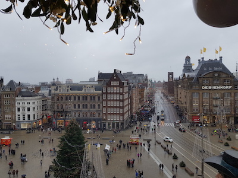

Activities
The Dam Square
When it's New year, all over the city there are lots of events planned. But the most famous event is the Dam Square, it's going to be filled with people, there are going to be concerts. And when the clocks ticks to the New year you can have a nice view from the canals, or the library at the Oosterdok.
€ 0,
Date: 31 December
from 19:00
Address: The Dam Square, Amsterdam